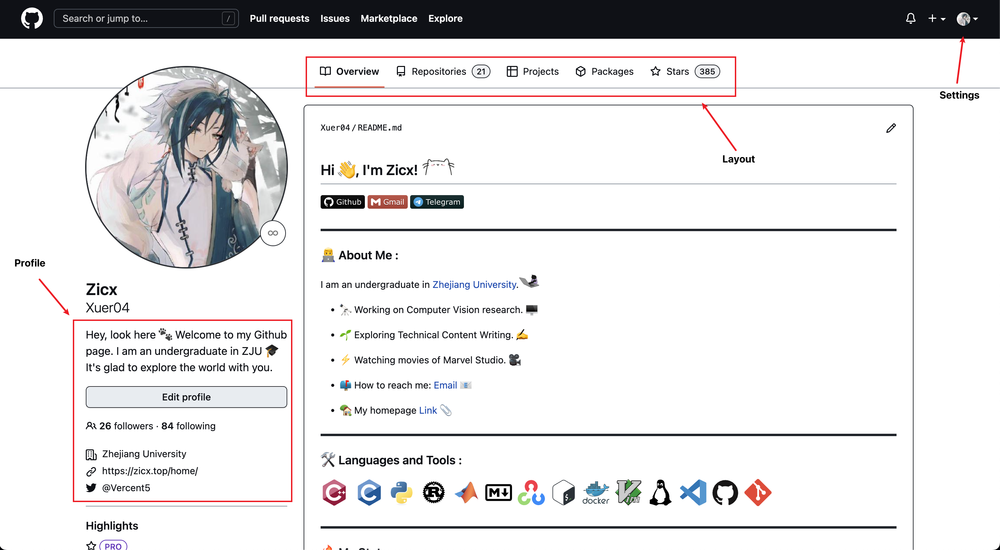

<!DOCTYPE html>
<html lang="en">
  <head>
    <meta charset="utf-8" />
    <meta name="viewport" content="width=device-width, initial-scale=1.0, maximum-scale=1.0, user-scalable=no" />

    <title>Online class01</title>
    <link rel="shortcut icon" href="./favicon.ico" />
    <link rel="stylesheet" href="./dist/reset.css" />
    <link rel="stylesheet" href="./dist/reveal.css" />
    <link rel="stylesheet" href="./dist/theme/serif.css" id="theme" />
    <link rel="stylesheet" href="./css/highlight/github.css" />


  </head>
  <body>
    <div class="reveal">
      <div class="slides"><section  data-markdown><script type="text/template">

<!--slides 1-->
<div align="center"><font size="30">

**朋辈辅学 技能拾遗**

Online class 01 -- 十月网课

</font></div>

<div align="right"><font size="6">

Given by [Zicx](https://zicx.top/)

</font></div>

<div align="right"><font size="6">

Powered by [reveal.js](https://github.com/hakimel/reveal.js)

Nov 5, Sat.

<aside class="notes"><p>Test note.</p>
<p></font></div></p>
</aside></script></section><section ><section data-markdown><script type="text/template">

## **Review**

</script></section><section data-markdown><script type="text/template">

<div align="center"><font size="30">

### **What we have learned?**

</font></div>

<font size="6">
<div align="left">

- **Git**
  - What is git?
  - How to use git?
    - GUI
    - CLI
  - Git CLI
    - Configuration(.gitconfig/.gitignore/.ssh)
    - Commit
    - Branch
    - Remote(pull/push/clone)
    - Log

</div><!-- .element: class="fragment" -->

<font size="6">
<div align="left">

- **Github**
  - Layout
  - Repo(star/fork/sync/clone/pull & push)
  - Github Pages

</div><!-- .element: class="fragment" -->

</script></section></section><section ><section data-markdown><script type="text/template">

## **Git Review**

</script></section><section data-markdown><script type="text/template">


**Git - Version Control System**


<font size="6">
<div align="center">
Git model

</script></section><section data-markdown><script type="text/template">


**Git - Version Control System**


<font size="6">
<div align="center">
Local and remote

</script></section><section data-markdown><script type="text/template">

**Git - Create**

```shell
# 创建一个新的本地存储库
$ git init [项目名称]

# 克隆存储库(代码仓库)
$ git clone <git_url>

# 将存储库克隆到指定目录
$ git clone <git_url> <folder_name>

# 将存储库克隆到指定目录，并指定分支
$ git clone <git_url> -b <branch_name> <folder_name>
```

</script></section><section data-markdown><script type="text/template">

**Git - Modify & Commit**

```shell
# 在工作目录中显示当前Git状态
$ git status

# 暂存文件
$ git add [file]

# 暂存所有更改的文件
$ git add .

# 将所有暂存文件提交到版本化历史记录
$ git commit -m "commit message"

# 将所有跟踪的文件提交到版本化历史记录
$ git commit -am "commit message"

# 取消暂存文件，保留文件更改
$ git reset [file]

# 对比已修改但未暂存内容的差异
$ git diff
```

</script></section><section data-markdown><script type="text/template">

**Git - Log & Inspect**

```shell
# 查看Git的版本
$ git --version
git version 2.38.0

# 显示当前活动分支的提交历史
$ git log [--graph]  # graph 参数可以以树状图的形式显示

# 显示当前活动分支的提交历史（更加简洁的列表形式）
$ git reflog

# 显示更改文件的提交
$ git show <file>
```

</script></section><section data-markdown><script type="text/template">

**Git - Branch**

```shell
# 列出所有本地分支
$ git branch

# 列出所有分支（包括本地和远程）
$ git branch -av

# 切换到 a 分支
$ git checkout a

# 快速切换到上一个分支
$ git checkout -

# 创建一个名为 new_branch 的新分支并切换到该分支
$ git checkout -b new_branch

# 删除名为 my_branch 的分支
$ git branch -d my_branch

# 切换到分支 B 并将分支 A 合并到分支 B
$ git checkout branchB
$ git merge branchA
```

</script></section><section data-markdown><script type="text/template">

**Git - Tag**

Tag is binded to commit.

```shell
# 获得远程Tag
$ git pull --tags

# 切换到某一个创建的Tag
$ git checkout tag_name

# 列出所有创建的Tag
$ git tag

# 创建一个新的Tag
$ git tag -a tag_name -m "tag message"

# 推送Tag到远程
$ git push --tags
```

</script></section><section data-markdown><script type="text/template">

**Git - Remote**

```shell
# 添加一个 Git url 作为远程存储库
$ git remote add [alias] [url]

# 显示远程存储库的名称和对应的 git_url
$ git remote -v

# 删除远程存储库
$ git remote rm [repo_name]

# 从远程存储库获取所有分支
$ git fetch [alias]

# 将本地分支的提交同步到远程存储库的分支
$ git push <远程主机名> <本地分支名>:<远程分支名>

# 从远程分支获取并合并提交到本地
$ git pull

# 推送并重置远程分支
$ git push origin -u <new>
```

</script></section><section data-markdown><script type="text/template">

**Git - Configuration**

```shell
# 设置提交和标签的信息
$ git config --global user.name "name"
$ git config --global user.email "email"

# 在文本编辑器中编辑全局配置文件
$ git config --global --edit

# 显示本地 repo 全局配置
$ git config --global --list
```

</script></section><section data-markdown><script type="text/template">

**Git - Gitignore**

```shell
# 忽略某个目录下的所有文件
logs/*

# “！” 意思是不要忽略
!logs/.gitkeep

# 忽略 node_modules 文件夹
node_modules

# 忽略 SASS 配置文件
.sass-cache
```

</script></section></section><section ><section data-markdown><script type="text/template">

## **Github Review**

</script></section><section data-markdown><script type="text/template">

<font size="10">
<div align="left">
Github


</script></section><section data-markdown><script type="text/template">

<font size="10">
<div align="left">
Github



<font size="6">
<div align="center">
Github Layout

</script></section><section data-markdown><script type="text/template">

<font size="10">
<div align="left">
Github


<font size="6">
<div align="center">
Github repo

</script></section></section><section  data-markdown><script type="text/template">

## **The end**

### Questions?
</script></section></div>
    </div>

    <script src="./dist/reveal.js"></script>

    <script src="./plugin/markdown/markdown.js"></script>
    <script src="./plugin/highlight/highlight.js"></script>
    <script src="./plugin/zoom/zoom.js"></script>
    <script src="./plugin/notes/notes.js"></script>
    <script src="./plugin/math/math.js"></script>
    <script>
      function extend() {
        var target = {};
        for (var i = 0; i < arguments.length; i++) {
          var source = arguments[i];
          for (var key in source) {
            if (source.hasOwnProperty(key)) {
              target[key] = source[key];
            }
          }
        }
        return target;
      }

      // default options to init reveal.js
      var defaultOptions = {
        controls: true,
        progress: true,
        history: true,
        center: true,
        transition: 'default', // none/fade/slide/convex/concave/zoom
        plugins: [
          RevealMarkdown,
          RevealHighlight,
          RevealZoom,
          RevealNotes,
          RevealMath
        ]
      };

      // options from URL query string
      var queryOptions = Reveal().getQueryHash() || {};

      var options = extend(defaultOptions, {"control":true,"progress":true,"width":960,"height":800,"margin":0.04,"transition":"convex","slideNumber":true}, queryOptions);
    </script>


    <script>
      Reveal.initialize(options);
    </script>
  </body>
</html>
